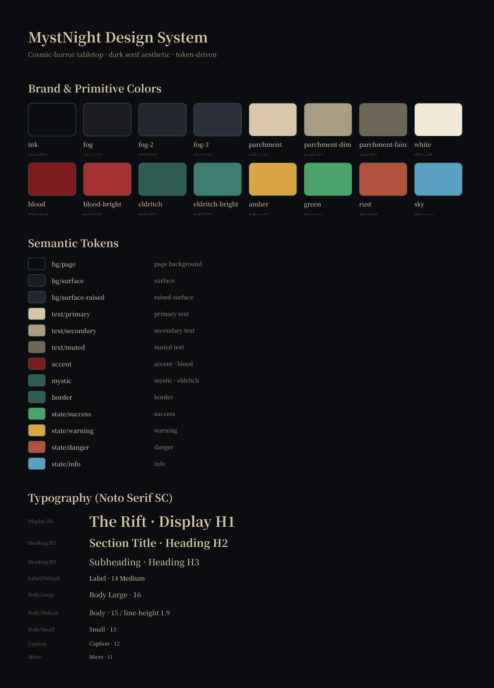

An AI that runs your whole tabletop night — eight games, one engine.
One engine, eight live games: AI-narrated storytelling, Cthulhu investigation, a flagship murder mystery, D&D, lateral-thinking soup, truth-or-dare, an original card game, and clocktower-style social deduction. The AI generates and locks the content, plays autonomous agents, fills empty seats, narrates in neural voice, and runs it all in real-time multiplayer. Shipped as a real product: bilingual, voiced, monetized.
→ MODESStoryteller · Cthulhu investigation · murder mystery · D&D · lateral-thinking soup · truth-or-dare · an original card game · clocktower-style social deduction — eight modes, one engine.
2
players to start
8
game modes
∞
live-generated cases
2
languages (auto)
1
solo dev
▶ PROMO · 60 SECONDS
See a night come together.
A short look at the product: a case generated from nothing, two players at the table, and the moment the accusation lands.
DESIGN · SYSTEM
One token-driven design system — eight game modes, Figma to code.
Every screen runs on the same system: a three-tier variable set (primitives → semantic → scale), a component & pattern library, and a Tailwind preset that mirrors the Figma tokens 1:1 — change a colour in Figma and it's the same class in code. One cosmic-horror, serif, dark aesthetic across storytelling, Cthulhu investigation, D&D, a murder mystery and an original card game.

Foundations — colour variables (primitives → semantic) + the serif type scale.
inkfogparchmentbloodeldritchambergreensky
16primitives
35components
9patterns
8screens
Variables → semantic tokens → components → patterns → full screens, all wired to a Tailwind preset + a starter React library & Figma Code Connect, so design and code never drift.
The screens below are rebuilt 1:1 from the live app's React components — the same layout, classes and token colours that ship on mystnight.com, rendered here as live DOM (not screenshots). Hover to enlarge, click to open full-size.
🕯Blood on the ClocktowerHidden-role social deduction at night5–15 · social
Round 3The Blackwood VigilImage budget 2/8
Investigators
Dr. Eleanor Vance
Pathologist
HP
12
SAN
48
Silas Crane
Antiquarian
HP
10
SAN
31
The lamplight gutters as you pry the chapel door. Beneath the altar, the stone has been lifted — and something below has been waiting a very long time.
🎲 Spot Hidden 45 → rolled 32 · Success
Only you · Behind the loose brick: a child's locket, still warm.
SAN check 1d6 → −4 · the carvings rearrange when you blink
✦ New clue added to the board: “The Sexton's Ledger”
A wet, deliberate sound moves in the dark below. It is climbing.
You · A
Read the ledger aloud by candlelight…
Suggested image · Scene
A lifted altar stone over a black pit, cold lamplight, wet stone steps descending…
NPCs present
Sexton Marlowe · evasive
The Verger · missing
StorytellerThe House That Counted Backwards2 listeners ●●
1:243:47
Azure ▾
Gentle ♀Deep ♂HealingEerieWhisper1.0×
♫ Soundtrack
The House That Counted Backwards
The clock in the hall had no hands, only a voice, and every night at the same unmarked hour it would tell her how many days she had left.
She had stopped believing it — until the morning the number matched the date carved, freshly, into the inside of her own front door.
By the third night she understood the house was not counting down to her death. It was counting down to her arrival, and she had not yet come home.
A bugbear heaves itself from the rubble, cleaver dragging sparks across the stone. It fixes on Kael.
🎲 Greataxe attack 1d20+5 → 18 vs AC 14 · Hit! 11 slashing
☠ Bugbear Reaver AC 14
HP 19 / 41
🗡Greatsword2d6 slashing
✦Fire Bolt1d10, on hit
🛡Dodgefoes disadv.
🧪Potion 1heal 2d4+2
→Flee~55%
Quest
Find the Sunless Heart before the warren floods. 2 of 3 wardstones lit.
Backpack
🗝 Iron warren key
📜 Scroll of light · 1
🪙 Gold · 84
Lateral · SoupThe Albatross SoupAsk yes / no
📌 The case — A man orders albatross soup at a seaside inn, takes one taste, walks home, and ends his own life that night. Why?
Had he eaten albatross before?
No
Did the taste tell him something?
Yes
Was someone close to him once lost at sea?
Yes — and that matters
Is he learning what he was fed back then?
Yes and no
Ask a yes / no question…
Truth or DareSpicy · House party4 players
DARE · for Rin
Call the third contact in your phone and tell them, completely straight-faced, that you've decided to become a professional clown. Stay on for 30 seconds.
drawn live by the AI · scaled to “spicy”, avoids your off-limits list
🤖 AI-generated prompts · on
Bloodbound · Storyteller☀ Day 2Vote to execute
A · MayaEmpath?
B · Theo 💀executed D1
C · YouWasherwoman
D · Rinnominated
E · Ada—
F · BotAI seat
Rin is on the block — 3 votes to execute, 2 needed. Hands up around the table…
Claim: Washerwoman ▾
“I confirmed Ada as the Investigator on night one…”
THE MODES · ONE ENGINE, EIGHT GAMES
Eight different tabletop nights — one AI engine underneath.
Every mode below is live at mystnight.com and rebuilt here 1:1 from the app's own components. They share one core — locked AI generation, real-time multiplayer, neural voice and a single design system — but each is a genuinely different game, with its own rules, its own screen, and its own reason to exist. Click any screen to open it full-size.
01 · STORYTELLER
An AI that writes and performs an original story1–6 listeners · narrated · synced
The AI plans a story, drafts several versions, scores its own work and keeps the best — then reads it aloud in a chosen neural voice with the current line highlighted karaoke-style and adaptive music under each paragraph, synced for two listeners.
Why it's strongIt doesn't just dump text — a plan → draft → self-score → keep-best loop rewrites until the story actually lands, then voice and music turn reading into a shared, cinematic moment.
Ahead of the curveMost "AI story" toys stop at a wall of text. This closes the loop with self-evaluation and synchronized multi-listener audio — generative content treated as a directed performance.
A cosmic-horror RPG with a real ruleset1–6 investigators · SAN · dice · clues
An AI Keeper runs skill checks, sanity, multi-clue deduction and a ticking world clock; investigators act in turns and the world reacts to what they actually do — with scene art generated on the fly.
Why it's strongA real system, not freeform chat: dice, suspicion and clue-gating are adjudicated server-side, so the AI narrates but can't cheat or spoon-feed the answer.
Ahead of the curveIt fuses a deterministic tabletop ruleset with an LLM narrator — exactly the hard, current frontier of "LLM as a fair game master."
A locked case, run by an AI host who can't spoil it1–8 players · 7 acts · autonomous suspects
Pick a script and a full, self-consistent case is generated and frozen — culprit, motive, timeline, evidence, red herrings — then played across seven acts with AI suspects who lie, scheme and try to frame you, ending in an accusation and a scorecard.
Why it's strongThe truth is locked at generation and the host model is hard-blocked from leaking it or speaking for real players; every suspect pursues its own agenda.
Ahead of the curveIt solves the "AI spoils its own mystery" problem with a server-side locked-truth architecture — trustworthy hidden information under an LLM. (Full breakdown below.)
Skill it provesTruth-integrity architecture · prompt safety & guardrails · live multiplayer state.
04 · D&D ADVENTURE
A dungeon crawl where the dice are real code1–6 party · d20 combat · levelling
A deterministic d20 engine owns attack rolls, AC, HP, spell slots, class features and levelling; an AI Dungeon Master owns the story, the NPCs and the consequences, with turn-based party combat.
Why it's strongDamage and dice are computed in code and never hallucinated, so combat is fair and legible while the model is free to do what it's good at — fiction.
Ahead of the curveA clean split of "math the engine owns" vs "fiction the LLM owns" — the architecture serious AI-GM systems are converging on.
Skill it provesDeterministic game-systems engineering · turn/initiative state machines · AI narration.
05 · LATERAL SOUP (海龟汤)
A secret the AI guards for fifty questions2–8 players · yes / no riddle
The AI holds a hidden solution and answers any player question only with Yes, No, Irrelevant or Partly, staying perfectly consistent as the table closes in — until someone solves it.
Why it's strongIt reasons about arbitrary, open-ended player questions for dozens of turns without ever leaking or contradicting itself — pure constrained-inference discipline.
Ahead of the curveA minimalist proof that an LLM can be a reliable, non-leaking oracle — the same primitive that powers the locked mysteries, distilled to its core.
A party deck that's never the same twice2–10 players · scalable intensity
Every prompt is generated on the spot, scaled to a chosen intensity and setting, and screened against an off-limits list the model must respect — a deck that adapts to the room instead of a fixed box of cards.
Why it's strongPrompts are fresh and context-aware — who's playing, where, what's forbidden — while the safety constraints are actually honored, not just suggested.
Ahead of the curveControllable, guardrailed generation for a social context: real personalization with hard boundaries, the thing casual AI usually gets wrong.
An original card game, designed from scratch2–6 players · bluff & reactions
A last-cat-standing game of bluffing, reactions and targeted plays — original rules, original hand-drawn line-art cards, AI opponents that fill empty seats, and reactions synced live across the table.
Why it's strongIt's a from-scratch game design — rules, balance and card art — running on the very same multiplayer engine, proving the platform isn't just licensed formats.
Ahead of the curveOriginal IP plus AI seat-filling means a full table any time, solo or duo — social games that no longer need a crowd to start.
Skill it provesOriginal game & visual design · custom illustration · AI-agent opponents.
08 · BLOOD ON THE CLOCKTOWER
Hidden-role deduction, hosted by an AI that also lies1–8 players · night / day / execute
Good versus evil social deduction where an AI Storyteller runs secret roles, night actions, nominations and executions — and fills empty seats with believable hidden agents, so a famously host-heavy game runs on demand.
Why it's strongThe AI juggles secret information, phase order and real-time table talk while playing convincing deceptive agents — the hardest kind of game to host well.
Ahead of the curveIt makes a notoriously host-dependent genre playable any time, even solo, with the AI both refereeing fairly and deceiving believably.
FLAGSHIP DEEP-DIVE · MURDER MYSTERY · 01 / PROBLEM
A murder-mystery night needs a group, prep, and a human host.
Scripted mystery kits are great — once you've bought one, scheduled six people, and read the host booklet for an hour. The format barely exists for two people on a weeknight, and once you've solved a script, it's spent.
→ 01 / PEOPLE
You need a full table.
Most mystery games fall apart below 4–6 players. Couples and remote pairs are left out.
→ 02 / A HOST
Someone has to run it.
A good session needs a game master who knows the truth, paces the reveals, and never breaks. That person can't really play.
→ 03 / REPLAY
One script, one solve.
Once you know the culprit, the box is dead. Fixed content doesn't replay.
02 / WHAT I BUILT
An AI game master that writes the case, plays the suspects, and runs the table.
Pick a script and the system generates a complete, self-consistent, locked case behind the scenes — truth, culprit, motive, timeline, evidence and red herrings — then runs it as a live multiplayer session.
→ HIDDEN CASE
Locked truth, every suspect framed.
For mystery scripts, every character — including the real players — gets a plausible motive and a secret. Only one is the real killer; the rest are deliberate misdirection. The truth is locked at generation and can't drift.
→ AUTONOMOUS NPCs
Suspects that lie and scheme.
AI characters act on their own goals: they accuse, defend, form alliances, and actively try to frame others — including you. They never speak for the real players, and they're influenced by what's actually said at the table.
→ REAL-TIME DUO
Two humans, one link.
Your friend clicks a link and joins instantly — no install, no signup. Private role info is isolated per player; public scene is shared and synced live.
→ VOICE + SCORING
Read aloud, then graded.
Optional neural TTS reads narration and each character in a distinct, gender-matched voice. At the end, every player gets a multi-metric scorecard on deduction, roleplay and key calls.
PRODUCT · THE LIVE TABLE
Mid-case: the suspects turn on you.
The shared scene streams to both players in real time; your private role and secret stay yours alone. AI suspects push their own agendas — here one of them is openly trying to frame you.
03 / ENGINEERING
The hard part isn't a chatbot. It's making an LLM run a fair game.
→ STRUCTURED OUTPUT
JSON the game can trust.
Every turn returns strict JSON (narration, NPC lines, revealed evidence, private notes, act state) with schema enforcement, retry, and an OpenAI fallback when the primary model filters or truncates.
→ TRUTH INTEGRITY
The answer can't move.
The full case is generated once and stored server-side only; the host model is fed the secret file but is hard-blocked from leaking it, from spoon-feeding clues, and from impersonating real players (prompt + server-side filtering).
→ PACING ENGINE
Acts on a real clock.
5–8 AI-designed acts advance on a live timer (or host control), gated so you can only skip ahead once the act's key clue is actually found. Clues only surface on genuine investigation, never on autopilot.
→ SYNC + FALLBACK
Resilient multiplayer.
Supabase Realtime drives instant updates, with a polling fallback so invited (anonymous) players never desync — a bug I only caught by playing on two devices.
→ VOICE PIPELINE
Provider-agnostic TTS.
One endpoint, swappable between OpenAI and Azure neural voices by env flag, with per-character voice selection by gender and hash, a sequential playback queue, and storage caching so a line is never re-synthesized.
→ BILLING
Free to try, then credits.
Stripe credit packs for hosting, Google OAuth, a per-account credit ledger with webhook dedup, a free first game for every new account, and invited guests always free.
UNDER THE HOOD · CASE GENERATION
Before anyone joins, a whole truth is written — and locked.
Pick a script and the engine generates a complete, self-consistent case server-side: culprit, motive, timeline, evidence and deliberate red herrings. It's scored for solvability, then frozen — the host model is fed the secret file but hard-blocked from leaking it.
04 / SHIPPED
Not a demo — a product with users, payments and a domain.
→ LIVE
mystnight.com
Custom domain, auto HTTPS, bilingual UI that auto-detects the browser language, link-preview cards, and a private live-analytics panel for the operator.
→ FROM 0 → 1
Whole loop, solo.
Design, full-stack build, LLM orchestration, voice, payments, auth, deploy, and growth — one person, end to end.
ENDGAME · REVEAL + SCORECARD
The accusation lands — then everyone gets graded.
When a player commits to an accusation, the locked truth is revealed and the case is walked back act by act. Each player receives a multi-metric scorecard on deduction, roleplay and the key calls they made.